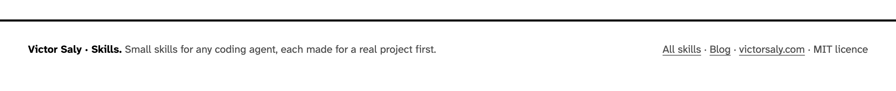
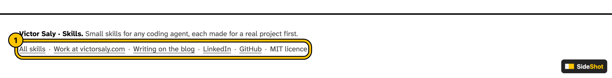
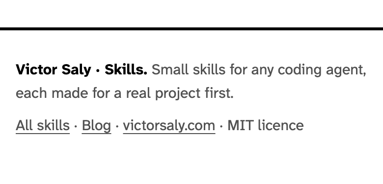
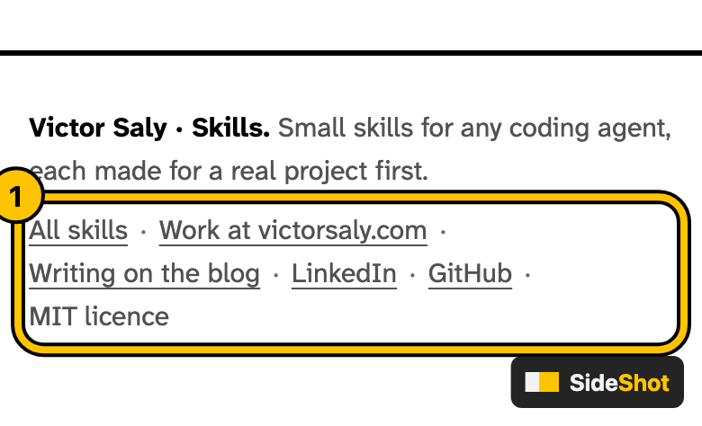

Before and after for every pull request that changes what people see: the part that changed, ringed, on a desk and a phone, in the PR, from one sentence to your coding agent.




A real pull request, skills.victorsaly.com #3: its footer, as SideShot pictured it. The ring and the tag are SideShot's; everything else is the page.